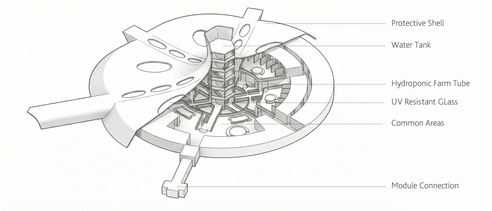
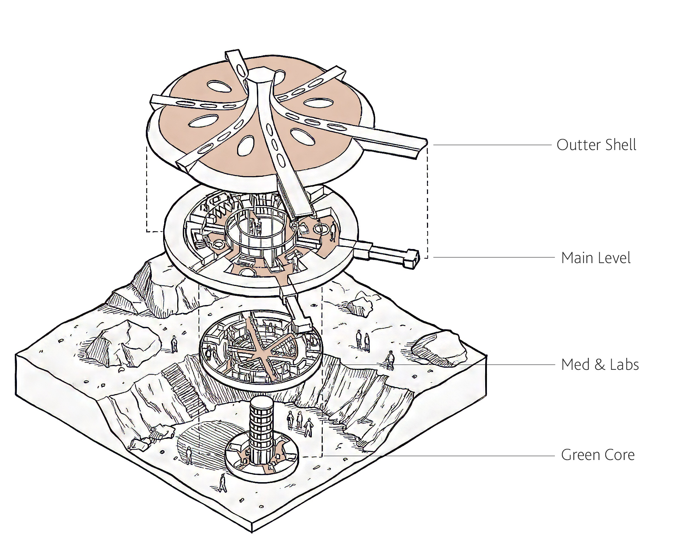
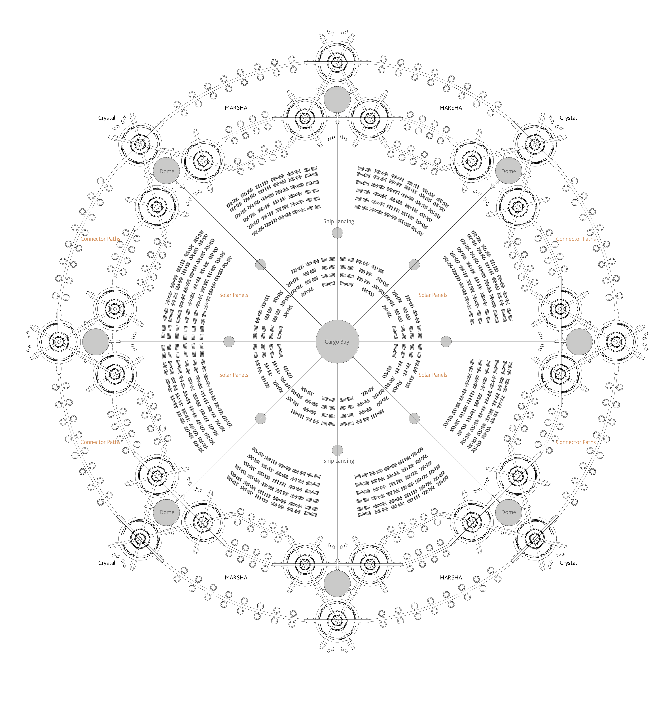
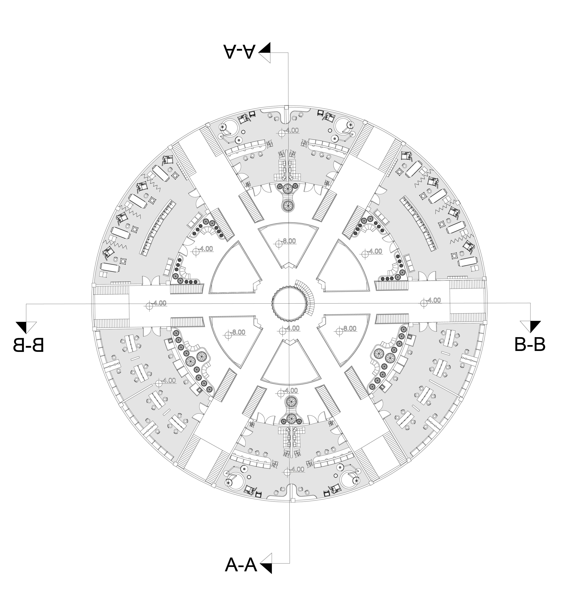
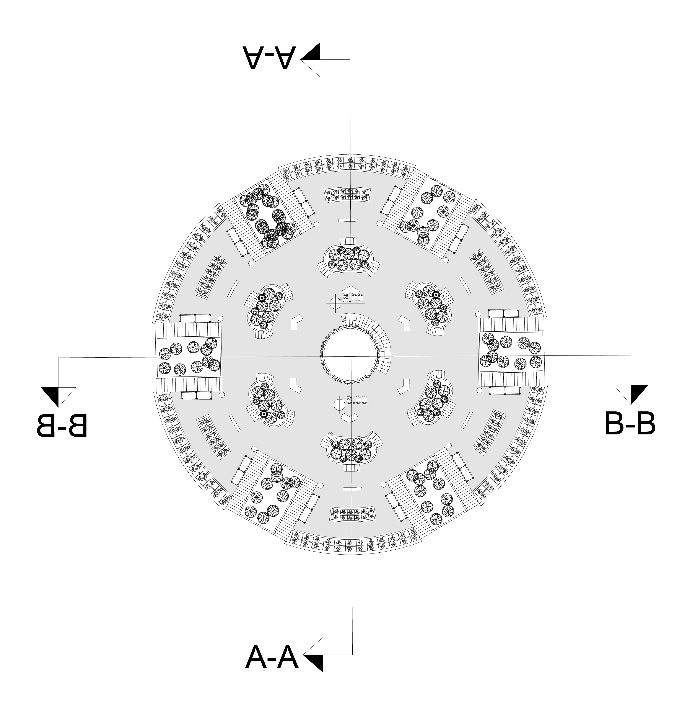
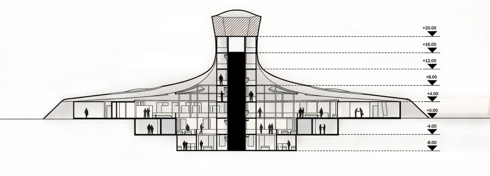
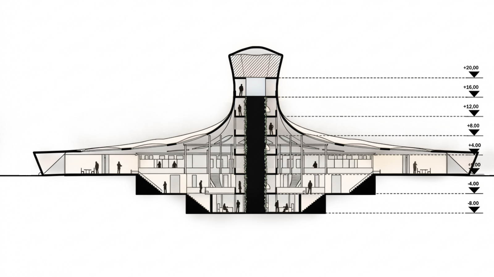

Crystal is an architectural response to the brutal reality of Mars. The project asks a simple question: how does a farm evolve into a colony? To settle a new world, we have to solve the food cycle first. This design is the stepping stone for that expansion, shifting the focus from abstract concepts to a rigid, technical infrastructure built for the long haul.
The priority here is survival, not philosophy. The architecture is built around a protected farming core that integrates hydroponic systems to tackle the threat of a Cascade Meltdown. In a closed environment, a small dip in resources can trigger a total collapse, so the design is engineered to be a stable foundation that doesn’t just produce food but secures the future of the people living there. This is a framework for human expansion on the Martian surface, starting with the most basic necessity of life.

Design Idea
The architectural language of Project Crystal takes a literal cue from the cold. On Earth, we associate ice with snow, but on Mars, cold is a desert. I looked at the way ice crystals grow—expanding symmetrically from a center—and used that parametric logic to define the colony’s footprint. By adopting a hexagonal geometry, the design functions as a living system that starts with a single seed and grows into a massive, interconnected cluster.
This modular approach is about pure utility. Each unit is designed to be easily replicated and plugged into the next, which simplifies construction and ensures no part of the infrastructure is ever wasted or abandoned. The symmetry isn’t just for looks; it is a defensive strategy. A symmetrical mass distributes solar energy and harsh radiation evenly across its skin, preventing any single side from taking the brunt of the Martian environment. This is architecture stripped of ego and built for the reality of staying alive.

Core of the Farm
The central tower serves as the biological engine of the colony. At the very top, a high-capacity water tank acts as a reservoir for the entire facility. This water is gravity-fed down the facade of the core, where the primary hydroponic farm area is located. The water continues its descent to the lowest subterranean levels, feeding an additional farming zone that is sustained by artificial UV lighting. This vertical distribution system ensures a constant, reliable nutrient flow, making the core a resilient life-support hub for the growing settlement.

Step by Step Construction
The construction of Project Crystal is a systematic process of excavation and layering. It begins with the central core tower, where automated drillers and robots extract Martian soil to create the primary foundation. As the core is established, a structural frame is deployed to support the expansion of secondary layers. Once the framework is in place, drones and 3D printers begin placing units and printing the outer protective shells. The process is designed to be modular and repetitive, allowing the colony to grow outward layer by layer until the exterior is finalized and fully shielded from radiation.

Building the Module
The project is named Crystal because each individual farm functions as a single, repeating unit. These units are designed to connect to one another to form a larger, structural lattice. When three units are joined, they naturally create a central void that is capped with a Geodesic Dome. This space serves as a communal social hub or a green area, adaptable to the specific needs of the inhabitants. This modular growth ensures that the colony can scale organically while always maintaining a shared center for the community.


Building the City
The urban plan of Crystal follows a radial logic. Once eight crystal units are established, they form a circular city plan centered around a primary Cargo Bay. This core provides a central logistics point that every crystal unit can access directly. The transition between the cargo bay and the crystals is marked by eight dedicated ship landing platforms, creating a high-capacity transport ring. Each crystal is interconnected by a network of open or enclosed pathways, and the spaces between these main structures are reserved for MARSHA habitats—NASA’s 3D-printed housing units—integrating specialized housing into the broader agricultural and research infrastructure.





Plans & Sections
The plan for Crystal is organized around a central farm axis that serves as both the structural spine and the primary life-support hub. This vertical arrangement ensures that every level remains physically and visually connected, using internal balconies to create social intersections and clear sightlines between the different functional zones of the colony.
The main level is the heart of the settlement, containing the accommodation, utility, and common social areas. As the largest portion of the plan, it features expansive open spaces designed for community life. From the main balcony, residents can look down into the medical and science labs on Level -1, as well as the lower garden area, maintaining a constant connection to the systems that sustain them.
Level -1 is dedicated to the colony’s scientific advancement, housing the medical, biological, and research laboratories. Positioned between the living quarters and the production base, this level features a balcony that overlooks the garden below, bridging the gap between research and cultivation.
The Level -2 is the foundation of the colony, dedicated entirely to the vertical farm area. Situated at the base for maximum protection. By placing the farm at the bottom of the central axis, the design ensures the entire colony is built upon a secure and sustainable food circulation system.